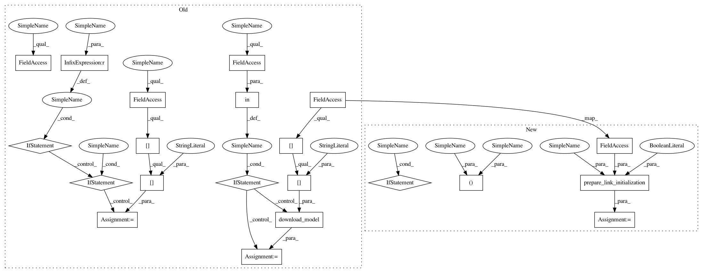

76b060f625e037d479a2eb25462a3b3f70af5bb7,chainercv/links/model/vgg/vgg16.py,VGG16,__init__,#VGG16#Any#Any#Any#Any#Any#,100
Before Change
def __init__(self,
n_class=None, pretrained_model=None, mean=None,
initialW=None, initial_bias=None):
if n_class is None:
if pretrained_model in self._models:
n_class = self._models[pretrained_model]["n_class"]
else:
n_class = 1000
if mean is None:
if pretrained_model in self._models:
mean = self._models[pretrained_model]["mean"]
else:
mean = _imagenet_mean
self.mean = mean
if initialW is None:
// Employ default initializers used in the original paper.
initialW = normal.Normal(0.01)
if pretrained_model:
// As a sampling process is time-consuming,
// we employ a zero initializer for faster computation.
initialW = constant.Zero()
kwargs = {"initialW": initialW, "initial_bias": initial_bias}
super(VGG16, self).__init__()
with self.init_scope():
self.conv1_1 = Conv2DActiv(None, 64, 3, 1, 1, **kwargs)
self.conv1_2 = Conv2DActiv(None, 64, 3, 1, 1, **kwargs)
self.pool1 = _max_pooling_2d
self.conv2_1 = Conv2DActiv(None, 128, 3, 1, 1, **kwargs)
self.conv2_2 = Conv2DActiv(None, 128, 3, 1, 1, **kwargs)
self.pool2 = _max_pooling_2d
self.conv3_1 = Conv2DActiv(None, 256, 3, 1, 1, **kwargs)
self.conv3_2 = Conv2DActiv(None, 256, 3, 1, 1, **kwargs)
self.conv3_3 = Conv2DActiv(None, 256, 3, 1, 1, **kwargs)
self.pool3 = _max_pooling_2d
self.conv4_1 = Conv2DActiv(None, 512, 3, 1, 1, **kwargs)
self.conv4_2 = Conv2DActiv(None, 512, 3, 1, 1, **kwargs)
self.conv4_3 = Conv2DActiv(None, 512, 3, 1, 1, **kwargs)
self.pool4 = _max_pooling_2d
self.conv5_1 = Conv2DActiv(None, 512, 3, 1, 1, **kwargs)
self.conv5_2 = Conv2DActiv(None, 512, 3, 1, 1, **kwargs)
self.conv5_3 = Conv2DActiv(None, 512, 3, 1, 1, **kwargs)
self.pool5 = _max_pooling_2d
self.fc6 = Linear(None, 4096, **kwargs)
self.fc6_relu = relu
self.fc6_dropout = dropout
self.fc7 = Linear(None, 4096, **kwargs)
self.fc7_relu = relu
self.fc7_dropout = dropout
self.fc8 = Linear(None, n_class, **kwargs)
self.prob = softmax
if pretrained_model in self._models:
path = download_model(self._models[pretrained_model]["url"])
chainer.serializers.load_npz(path, self)
elif pretrained_model:
chainer.serializers.load_npz(pretrained_model, self)
def _max_pooling_2d(x):
return max_pooling_2d(x, ksize=2)
After Change
def __init__(self,
n_class=None, pretrained_model=None, mean=None,
initialW=None, initial_bias=None):
n_class, path = prepare_link_initialization(
n_class, pretrained_model, self._models, False,
default_out_channels=1000)
if mean is None:
if pretrained_model in self._models:
mean = self._models[pretrained_model]["mean"]
else:
mean = _imagenet_mean
self.mean = mean
if initialW is None:
// Employ default initializers used in the original paper.
initialW = normal.Normal(0.01)
if pretrained_model:
// As a sampling process is time-consuming,
// we employ a zero initializer for faster computation.
initialW = constant.Zero()
kwargs = {"initialW": initialW, "initial_bias": initial_bias}
super(VGG16, self).__init__()
with self.init_scope():
self.conv1_1 = Conv2DActiv(None, 64, 3, 1, 1, **kwargs)
self.conv1_2 = Conv2DActiv(None, 64, 3, 1, 1, **kwargs)
self.pool1 = _max_pooling_2d
self.conv2_1 = Conv2DActiv(None, 128, 3, 1, 1, **kwargs)
self.conv2_2 = Conv2DActiv(None, 128, 3, 1, 1, **kwargs)
self.pool2 = _max_pooling_2d
self.conv3_1 = Conv2DActiv(None, 256, 3, 1, 1, **kwargs)
self.conv3_2 = Conv2DActiv(None, 256, 3, 1, 1, **kwargs)
self.conv3_3 = Conv2DActiv(None, 256, 3, 1, 1, **kwargs)
self.pool3 = _max_pooling_2d
self.conv4_1 = Conv2DActiv(None, 512, 3, 1, 1, **kwargs)
self.conv4_2 = Conv2DActiv(None, 512, 3, 1, 1, **kwargs)
self.conv4_3 = Conv2DActiv(None, 512, 3, 1, 1, **kwargs)
self.pool4 = _max_pooling_2d
self.conv5_1 = Conv2DActiv(None, 512, 3, 1, 1, **kwargs)
self.conv5_2 = Conv2DActiv(None, 512, 3, 1, 1, **kwargs)
self.conv5_3 = Conv2DActiv(None, 512, 3, 1, 1, **kwargs)
self.pool5 = _max_pooling_2d
self.fc6 = Linear(None, 4096, **kwargs)
self.fc6_relu = relu
self.fc6_dropout = dropout
self.fc7 = Linear(None, 4096, **kwargs)
self.fc7_relu = relu
self.fc7_dropout = dropout
self.fc8 = Linear(None, n_class, **kwargs)
self.prob = softmax
if path:
chainer.serializers.load_npz(path, self)
def _max_pooling_2d(x):
return max_pooling_2d(x, ksize=2)
In pattern: SUPERPATTERN
Frequency: 3
Non-data size: 21
Instances
Project Name: chainer/chainercv
Commit Name: 76b060f625e037d479a2eb25462a3b3f70af5bb7
Time: 2018-05-01
Author: yuyuniitani@gmail.com
File Name: chainercv/links/model/vgg/vgg16.py
Class Name: VGG16
Method Name: __init__
Project Name: chainer/chainercv
Commit Name: 76b060f625e037d479a2eb25462a3b3f70af5bb7
Time: 2018-05-01
Author: yuyuniitani@gmail.com
File Name: chainercv/links/model/segnet/segnet_basic.py
Class Name: SegNetBasic
Method Name: __init__
Project Name: chainer/chainercv
Commit Name: 76b060f625e037d479a2eb25462a3b3f70af5bb7
Time: 2018-05-01
Author: yuyuniitani@gmail.com
File Name: chainercv/experimental/links/model/fcis/fcis_resnet101.py
Class Name: FCISResNet101
Method Name: __init__